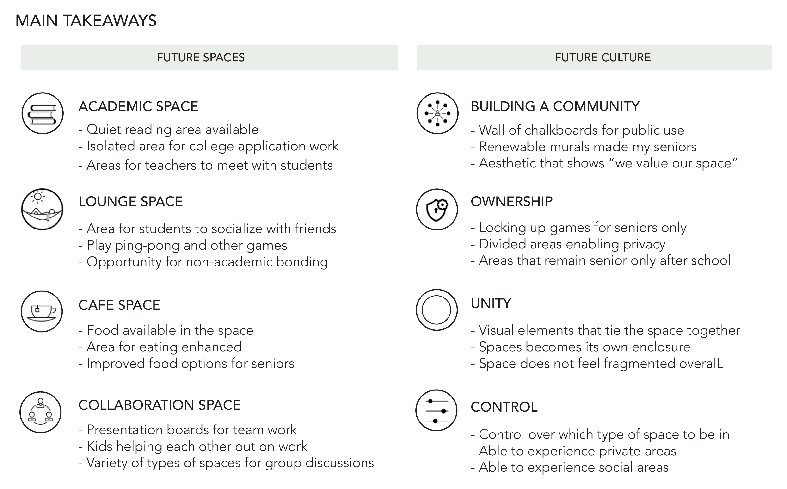
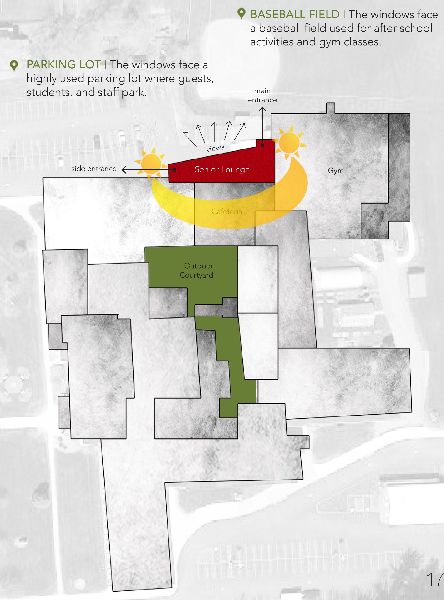
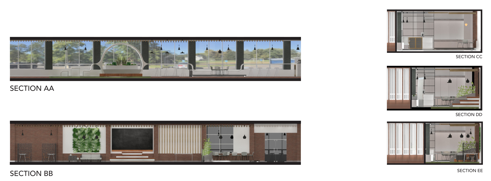
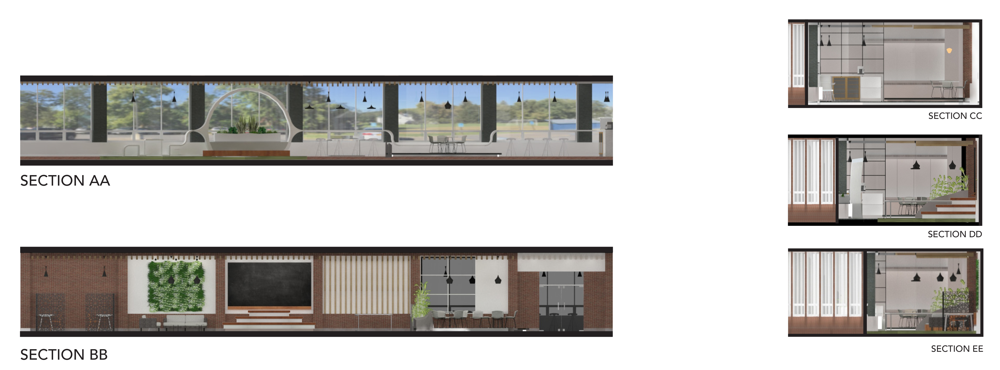

To redesign Moravia High School's senior lounge for it to provide a space with resources to support academic, social, and wellbeing needs of seniors.
The current use of the senior lounge is circulation and
movement. Inspired by this function and the narrow
existing architecture, our design celebrates this egress
pathway by transforming it into a metaphor for the “High
Line” located in New York City. Our design revamps the
existing space through the creation of a new “Living
System” that connects natural elements and railroad
industrial design very reminiscent of the features found
throughout The High Line. Through the synergy of these
features and different varieties of furniture formations,
the senior lounge still promotes connectivity while becoming
a new dynamic enclosure of its own.
The first stage in every design process is to understand the stakeholders of the project. Our team
went to visit Moravia High School to talk to the stakeholders of: high school seniors, teachers, headmasters, and janitors.
Through user surveys and interviews, we arrived at several points of information to base our design decisions off of.

The corridor has almost full height windows spanning across its entire length, thus sunlight
and views from inside were exteremely important aspects to consider.


 
